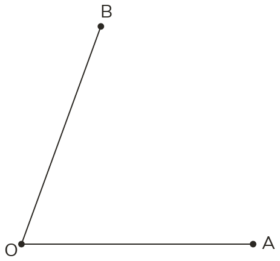
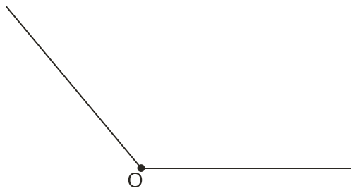
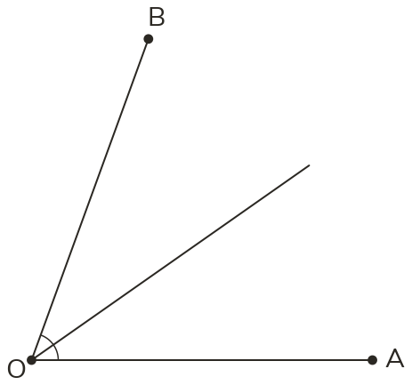
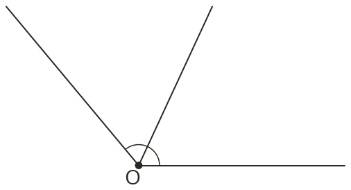

Westonbirt Maths · Constructions and Circle Theorems
Perpendicular and Angle Bisectors
Name: ______________________ Date: ____________
1
Construct the points equally far from the arms OA and OB.
2
Construct the points equally far from the two lines.
3
Two walls meet at 110°. A lamp is equally far from both walls. What angle does its line from the corner make with each wall?
4
P is inside angle AOB, 2 cm from OA and 2 cm from OB. Q is 2 cm from OA and 3.5 cm from OB. Which is on the bisector? Which arm is Q nearer?
5
A is on arm OP and B is on arm OQ of angle POQ. Explain how to find the point equally far from A and B and also equally far from OP and OQ.
Ext
Construct the bisectors of two angles of a triangle with sides 6 cm, 7 cm and 8 cm. Explain why their crossing is the centre of a circle touching all three sides.



